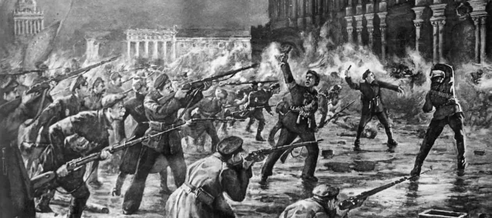

If there is any single event in human history that leftists worship, it is the communist Russian Revolution. They idealize it as some sort of glorious triumph of the common man over the establishment, bringing equality to all. What they do not realize is how foolish that perception truly is. The Russian Revolution was a brutal, horrible, and excessively bloody event fought for nothing but the changing of power to even more sinister hands. In this article, I will explain why I draw that conclusion, and how bad the revolution itself truly was.
The Road to Revolution
As everyone reading this article likely knows, the ideology of communism was a radical (and nonsensical, to boot) solution to the struggles of the individual worker in the Industrial Revolution. It had evolved from the ideologies of Jacobinism and Socialism, with very little difference from their principles. Rather than allow the free market to work as it wished, philosophers supported concepts such as the public ownership of property, free love, atheism, and worse degenerate ideas.
In the 1900s, before the First World War, communism and socialism were fringe ideologies. Some groups had radically attempted to apply it, and failed miserably, due to the economic illegitimacy of communism and socialism, and some (such as the Paris Commune) were stomped out by government forces. However, Russia’s poor situation near the end of the war offered the opportunity to the radicals to construct a true communist state.
It is here that we begin to see the roots of the revolution take shape. Russia entered the First World War drastically unprepared and underdeveloped for modern warfare. Their Tsar, Nicholas II, was incompetent and unskilled at political and military matters. Serfdom for many years had crushed the Russian nation’s chances at full industrialization, and her economically impoverished state provided no assistance.
Russian troops, often illiterate and uneducated peasants, were sent to fight many of the best equipped and trained armies in the world, while many did not even have a rifle in their hands. As can be expected, the Russians struggled to pull off one major victory. As a consequence, families back home starved, and the poor living conditions grew steadily worse.
As these events happened, radicals began to rile up the populace with promises of wealth, freedom, and unity. Desperate for anything other than the Tsarist monarchy, Russian veterans and citizens began to follow the communists. In other circles, calls for constitutional monarchy and republicanism were made, and many supported those movements as well.
The February Revolution and the Intermediate Period
As time grew on, large masses of workers and other civilians went on strike, and on 11 March, 1917, the strikes exploded into barbaric riots. Rioters destroyed government buildings, killed officers of the Russian Army, and worse. In need of action to hold the nation together, the Tsar sent out his army to bring the riots to a halt, but instead wound up with his own army deserting to the side of the enemy.
Nicholas II then dissolved the Duma, and stripped it of its power. With disorder engulfing the country, the Russian national parliament (the Duma) established a temporary government to maintain control. Leading the temporary government was Prince Georgy Lvov (in the role of Prime Minister). Under this provisional government, the first Marxist would also enter a government position, Alexander Kerensky.
In the course of this, socialist “soviets” that were made up of left leaning soldiers and working classmen, but dominated by the leftist middle class, began to work at dividing the Russian populace. Fragmented socialist groups split apart the alliances in the soviets, and attempted to usurp control of the Duma. Vladimir Lenin’s arrival in April would only further divide the Socialist Party in Russia, splitting it into two separate parties.
He began to preach around this time about how Russia should immediately withdraw from the war, give free land to peasants, and give out free bread. The government refused to leave the war, and the power hungry socialist party orchestrated new militias, given the name “the Red Guard,” to utilize violent methods to accomplish control over the Russian people.
The Reaction
Soon after, the Bolsheviks began a sort of takeover in the Russian Socialist Party, with their main message being the classic slogan “All power to the Soviets!” describing their movement on its own. Immediately, as the Provisional Government began to see the shift in power, they moved to adapt to the situation. Prince Lvov resigned his position in favor of Kerensky, who would then begin arresting his competing Bolsheviks. Leadership figures such as Leon Trotsky were arrested.
However, as the Central Powers continued to batter Russia, she finally snapped. The military mutinied, and a republic was established. It would not be long before the Bolsheviks would destroy their own promise of equality, however, and convinced the government to strip all Bourgeoisie citizens of their right to government participation.
October Turns Red

In November (October on the Julian Calendar), with enough power under them, the Bolsheviks under the command of Lenin made their move. In a sweeping revolution, the communists sent out their militias to occupy government buildings and attack public officials. In the process, they spilled the blood of their own countrymen without remorse, in incidents such as the Assault of the Winter Palace.
In the way they fought, no humanity or dignity was shown. At the end, the Provisional Government was forced to give away its power to the Soviets, of whom a new council was established.
The Catastrophic Aftermath
With the socialists in full control of the Russian nation, many policies against common sense and profit were implemented. All private property was then owned by the state, all banks became property of the state, and fixed wages were implemented. Unsurprisingly, the economy collapsed. Peasants were required to submit all harvests to the state, and were not paid enough in return to survive.
Once again, Russia descended into starvation. A massive black market was established as a result. In response, the government used executions to suppress it, but still failed. Lenin was forced to allow the selling of goods on the market again.
Communist bloodshed was not yet over, however. Later on, as the Russian Civil War brewed, red forces would brutally execute the Tsar and his family, and bury them in shallow graves. Churchgoers and clergy would be tortured and massacred, and any who opposed the iron fist of revolution were executed. The pool of blood then generated by the Russian Revolution became just as great as that establishment they replaced.
A Certain Conclusion
As can be seen from the above article, the Russian Revolution was no glorious affair. It was filled with needless bloodshed, incredible cruelty, and in the end, it would ironically fail for the exact reasons the revolution was fought, nearly reverting to the previous economic system. We can see that there was virtually no “compassion to the poor” that the communists promised. It is obvious that the narrative fed by the left is a falsehood, and so we should educate ourselves to disregard it.
Read More: Why Communism Doesn’t Work